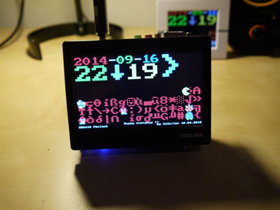

DF3120 is a small digital photo frame that capable of running small linux programs. I read about it on a hacker site [LINK Here].
I like it very much because it is very small, pretty and has a screen on it, perfect on a real desktop. Then I bought 3 of this little fella :-).
The device itself does not have a battery inside. Therefore whenever you restart it, you’ll have to set the time again, and there is no really convenient ways to do it yet. So I made use of its USB ethernet and attach it to a OpenWRT router, added it to the local LAN. Then I compiled the ntpdate package, so that it can automatically connect to the time server to sync time.
Then I wrote a small pacman/mario clock program for it, followed on this guide [GUIDE Here], so that I can put it on my desk :-).
dfclock on DF3120
dfclock on DF3120
You can browse the source code here [SOURCE Here], A running video can be found here [LINK Here]
https://github.com/cosailer/fbclcok
This progame runs on the framebuffer device, it does't have to be df3120 though. Later I'll build one that makes use of the sdl library inside.

dfclock on OK6410
If you don’t want to rebuild the image and kernel for DF3120, you can also use mine provided below. However, I don’t provide any warranty. I added some more commands to the busybox, like chmod, fdisk, mkfs, httpd, unzip etc.. also nano, lighttpd, lynx and ntpdate are compiled to run on DF3120.
The image is copied from a 256MB SD card, it contains a single primary partition. The kernel is built with Linux Gadget ethernet support.